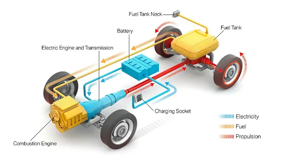

THE BMW PLUG-IN HYBRIDS.
NIỀM VUI LÁI XE: BMW PLUG-IN HYBRIDS.
-
Trải nghiệm cách âm tốt nhờ chế độ lái thuần điện.
-
Gia tăng công suất trong quá trình tăng tốc nhờ sử dụng motor điện.
-
Hiệu suất đạt tối đa nhờ vào sự phân bổ năng lượng thông mình và tự động chuyển đổi nguồn năng lượng.
BMW PLUG-IN HYBRID SỰ LỰA CHỌN HOÀN HẢO CHO PHONG CÁCH CỦA BẠN.
-
Tính linh hoạt ưu việt - sự lựa chọn lý tưởng cho những khách hàng đang tìm kiếm sự phóng khoáng.
-
Là sự lựa chọn hoàn hảo cho mục đích sử dụng hàng ngày và nhu cầu cá nhân nhờ vào sự kết hợp giữa động cơ xăng và mô-tơ điện.
-
Sự phát triển các mẫu xe Plug-in Hybrid của BMW mang đến đa dạng trải nghiệm và đề cao tính cá nhân.
FAQ: Các câu hỏi quan trọng và câu trả lời về động cơ Plug-in Hybrids của BMW.
Plug-in Hybrid là gì?
Xe Plug-in Hybrid (PHEV, viết tắt của Plug-in Hybrid Electric Vehicle) bao gồm 1 động cơ xăng, một động cơ điện và một bộ pin cao áp - do đó có thể linh hoạt chuyển đổi giữa 2 dạng năng lượng. Điều này giúp chiếc xe có thể giảm mức tiêu hao nhiên liệu cũng như lượng khí thải CO2. Hai hệ thống hoạt động hỗ trợ lẫn nhau cũng giúp làm tăng hiệu suất và khả năng tăng tốc của xe.
Đúng như tên gọi của nó, plug-in Hybrid là xe có thể sạc được, sử dụng bộ sạc treo tường wallbox hoặc trạm sạc công cộng. Hiệu suất tối đa của Plug-in Hybrid đạt được khi sạc đây pin; điều đó có nghĩa là thiết bị sạc phải có sẵn ở nhà hoặc tại nơi làm việc.
Phạm vi lái thuần điện sau khi sạc đầy trong trường hợp của chiếc BMW 530e có thể lên tới 66km. Đối với các phương tiện sử dụng pin cao áp, công nghệ càng phát triển thì phạm vi hoạt động thuần điện sẽ tăng lên. Trong quá trình thu hồi năng lượng, khi nhấc chân ra khỏi bàn đạp ga, động năng sẽ được chuyển đổi thành năng lượng điện, được thu hồi và lưu trữ trong khối pin - nhờ đó, quãng đường di chuyển thuần điện sẽ tăng thêm.
Là một phần trong chiến lược “ Power of Choice”, BMW cung cấp đa dạng sự lựa chọn plug-in hybrid cho những khách hàng yêu thích hệ truyền động đặc biệt này.
Một hệ thống Plug-in Hybrid sẽ lý tưởng cho người tìm kiếm sự phóng khoáng: một mặt, hệ thống giúp tối ưu chi phí khi di chuyển thuần điện ở những tuyến đường sử dụng hằng ngày. Mặt khác, hệ thống cũng giúp xe tăng phạm vi hoạt động cho những chuyến đi xa nhờ sự phối hợp giữa động cơ điện và động cơ xăng.
Lợi ích mà động cơ Plug-in Hybrid mang lại là gì?
Những lợi ích đối với khách hàng khi sử dụng xe Plug-in Hybrid là sự êm ái khi sử dụng ở chế độ thuần điện và khả năng tăng tốc mạnh mẽ nhờ sự hỗ trợ từ động cơ điện ở chế độ hybrid.
Những khách hàng sở hữu xe Plug-in Hybrid có xu hướng di chuyển thuần điện trên hầu hết lộ trình.
Thông thường, những quãng đường di chuyển hằng ngày sẽ dưới 50km, do đó xe có thể di chuyển thuần điện, giúp tiết kiệm chi phí so với động cơ đốt trong cổ điển. Xe sử dụng động cơ hybrid sẽ có thêm một tiện ích khác đó là nếu lượng pin không đủ, động cơ đốt trong sẽ tự động được bật để tiếp tục di chuyển.
Ngoài ra, tùy thuộc vào từng quốc gia sẽ có những lợi ích tài chính cụ thể đối với loại xe sử dụng động cơ Plug-in Hybrid.
Tôi nên chú ý điều gì khi sạc pin xe plug-in hybrid?
Đúng như tên gọi của nó, xe có thể sạc được từ ổ cắm bộ sạc treo tường Wallbox hoặc trạm sạc công cộng. Khi đang di chuyển trên đường, bạn chỉ cần 1 cáp sạc (mode 3) để sử dụng trạm sạc công cộng, cáp thường được giao theo xe. Xe có thể hoạt động với hiệu suất tối đa sau khi sạc đầy. Lời khuyên cho những người sở hữu chiếc BMW Plug-in Hybrid là thường xuyên sạc xe để có thể tận dụng tối đa nguồn điện do động cơ điện mang lại.
Yếu tố nào ảnh hưởng tới hiệu suất pin cao áp trên chiếc xe Plug-in Hybrid?
Một yếu tố bên ngoài ảnh hưởng tới hiệu suất và dung lượng pin là nhiệt độ. Tương tự như pịn điện thoại, pin cao áp của xe cũng sẽ bị hạn chế khả năng hoạt động ở nhiệt độ quá nóng hoặc quá lạnh. Đây là lý do tại sao phải bật điều hòa xe trong quá trình sạc hay nói cách khác là làm nóng ắc quy và nội thất và mùa đông, hoặc làm mát chúng vào mùa hè. Với việc khởi động điều hòa từ trước không chỉ giúp tiết kiệm năng lượng cho chuyến đi sắp tới mà còn giúp pin được điều chỉnh ở nhiệt độ tối ưu, nhờ đó giảm thiểu những ảnh hưởng của nhiệt độ môi trường đến pin. Dung lượng của pin cũng có thể ảnh hưởng tới phạm vi di chuyển. Ngoài nhiệt đô, vẫn có các yếu tố ảnh hưởng đến phạm vi di chuyển như điều hòa không khí, tải trọng mang theo và phong cách lái xe của chủ xe.
Tôi phải chú ý điều gì nếu trong thời gian dài không sử dụng xe?
Nếu bạn có ý định không sử dụng xe trong một khoảng thời gian, chẳng hạn như trong dịp lễ, có nhiều cách khác nhau để tác động tích cực lên tuổi thọ pin. Luôn duy trì mức pin từ 30-50% và đỗ xe ở nơi mát mẻ hoặc trong bóng râm vào mùa hè và để xe trong gara vào mùa đông. Ngoài ra, không nên cắm sạc cho xe nếu bạn để xe đỗ trong thời gian dài.
Làm gì để chiếc BMW Plug - in hybird trong tình trạng tốt nhất?
Trên chiếc BMW Plug-in hybrid sẽ có một chức năng dẫn hướng chủ động giúp cho bạn đến được điểm đến đã được cài đặt một cách hiệu quả và tiết kiệm nhiên liệu. Khi sử dụng chức năng này, năng lượng điện sẵn có trong động cơ được phân bổ một cách thông minh và tối ưu theo lộ trình của bạn. Do đó hãy sử dụng chức năng dẫn hướng chủ động ngay cả khi bạn đã biết đường. Đối với các dòng xe Plug-in Hybrid, BMW có chế độ lái Hybrid Eco Pro, chế độ này giúp tối ưu hiệu quả lái xe, tiện nghi, ánh sáng và điều hoà không khí. Chức năng xem trước (Forward View Assistant) là một tính năng đặc biệt khi sử dụng chế độ này. Các mẹo tình huống để lái xe hiệu quả sẽ hiện thị trên màn hình HUD hoặc trên màn hình trung tâm, ví dụ như khuyên bạn giảm tốc nếu sắp tới khu vực bị giới hạn tốc độ. Một chức năng hữu ích khác là phân tích phong cách lái xe (Driving Style Analysis), phân tích thói quen, hành vi lái xe xe và đưa ra lời khuyên để lái xe hiệu quả hơn. Trên các xe BMW mới có hệ dẫn động hybrid (ví dụ BMW X5 xDrive45e), phanh tái sinh cũng hỗ trợ khi bạn thả bàn đạp chân ga. Với các hệ thống điều khiển thông minh chủ động, xe có thể tự quyết định việc có thực hiện quy trình tái tạo năng lượng thông qua phanh tái sinh hay không. Đối với các khu vực giới hạn tốc độ, có bùng binh, chỗ rẽ hoặc khu vực đông dân cư, hệ thống cũng sẽ điều chỉnh tối ưu mức độ giảm tốc cho phù hợp với tình huống giao thông, nhờ vào hệ thống phanh hỗ trợ, người lái sẽ giảm bớt áp lực khi phải phanh mạnh liên tục và tăng thêm sự thoải mái khi lái xe.